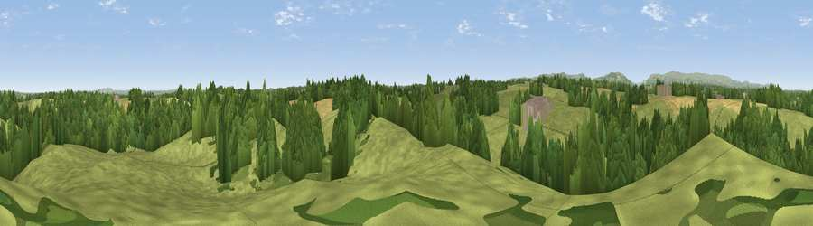

Viewpoint near Dudleston Heath
#26467 in England · top 85% of its area beats it · near Dudleston HeathThe view, rendered

A 360° render of this exact spot computed from the terrain model, tree cover and land cover — summer colours, afternoon light, calibrated against photographs of famous viewpoints. Real trees, hedges and buildings will differ in detail.
The panorama
Grey silhouette: terrain skyline in each direction (720 bearings, Earth curvature and refraction included). Dashed green: skyline with trees (+15 m) and buildings (+8 m) as obstacles. Blue strip: how far the ground is visible on each bearing.
Where the view opens
Wedge length = distance to the farthest visible ground on that bearing (vegetation-aware). Rings at 10, 25 and 50 km.
What fills the view
60% grassland · 30% woodland · 10% cropland ·
Angular shares of the visible panorama (visual magnitude), not map area. Landscape diversity 0.41 (0–1 Shannon).
Key numbers
More beautiful places nearby
The staircase of upgrades: each row has a higher view potential than everything closer. Driving times are estimates from straight-line distance, calibrated against real road routing — check an actual route before setting out.
| Place | Direction | Drive | Score |
|---|---|---|---|
| Viewpoint near Ifton Heath | W · 3 km | ~7 min | 49.0 |
| Viewpoint near Ifton Heath | SW · 4 km | ~8 min | 53.9 |
| Frankton Hill | SSE · 7 km | ~14 min | 59.8 |
| Viewpoint near Bronygarth | WSW · 9 km | ~18 min | 62.0 |
| Viewpoint near Bronygarth | WSW · 9 km | ~18 min | 74.7 |
| Viewpoint near Trefonen | SW · 16 km | ~29 min | 75.0 |
| Viewpoint near Bickerton | NE · 19 km | ~33 min | 76.4 |
| Viewpoint near Harthill | NE · 22 km | ~36 min | 78.5 |
52.94962, -2.96625 · source: screening · position refined by local search. Computed location — check access rights before visiting.